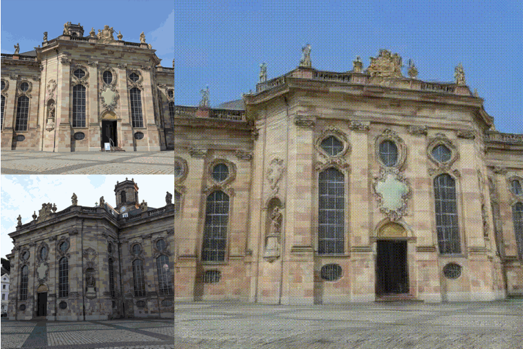

2026 · arXiv
Feed-forward 3D Gaussian splatting for unconstrained images
Yuki Fujimura, Takahiro Kushida, Kitano Kazuya, Takuya Funatomi, and Yasuhiro Mukaigawa, WildSplatter: Feed-forward 3D Gaussian Splatting with Appearance Control from Unconstrained Images, arXiv:2604.21182, 2026.